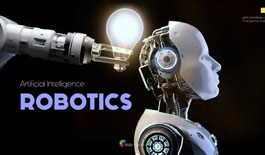
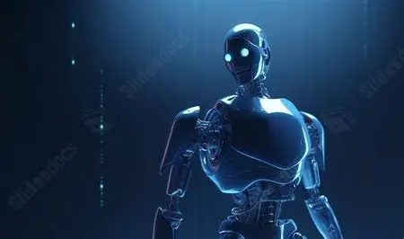
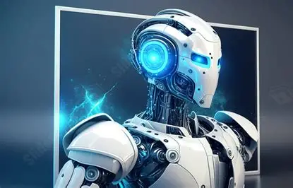
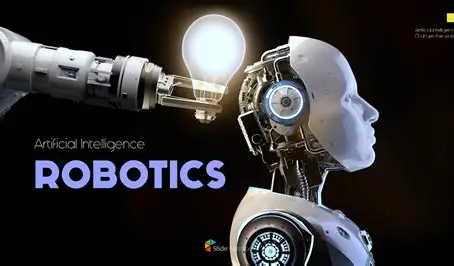
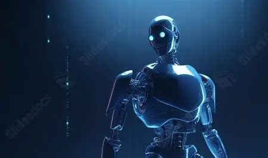
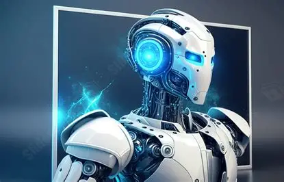

Robotics is an interdisciplinary field that merges engineering, computer science, and technology to create machines capable of performing various tasks autonomously or semi-autonomously. These robots are often programmed to perform specific tasks, such as assembling products on a factory line, assisting in surgeries, or even exploring distant planets. Robotics has opened new possibilities for industries, healthcare, exploration, and personal use, leading to innovation in sectors that previously relied heavily on manual labor. In recent years, advancements in artificial intelligence, machine learning, and sensor technologies have greatly enhanced the capabilities of robots. They are no longer just machines following preset instructions, but autonomous systems capable of learning, adapting, and interacting with their environment. From robotic arms in manufacturing to drones in agriculture, the world of robotics is rapidly evolving and has become a critical part of modern society.
 





Robots are revolutionizing industrial sectors by automating processes that previously required human labor. The most common types of industrial robots include robotic arms, which are widely used in the automotive, electronics, and consumer goods industries. These machines can perform tasks with precision, speed, and endurance beyond human capabilities, such as welding, painting, assembling, and packaging. In addition to reducing production time and costs, industrial robots can work in hazardous environments where human safety might be at risk, such as in handling toxic materials or working in extreme temperatures. As the demand for mass production grows, robots are becoming essential for maintaining the pace and quality required in modern manufacturing. The future of industrial robots includes increased collaboration between robots and humans, with robots assisting workers in complex tasks that require high-level decision-making.